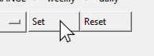

Getting Started
Welcome to Klusterbox
Once you have downloaded Klusterbox and started it for the first time, you will be welcomed by a screen saying “Welcome to Klusterbox.” Below you will be prompted to enter a station. This is where you can enter the name of your station. If you plan on entering more stations, you will be able to add additional stations in the next screen. You also have the option of not adding any stations at all.
For the sake of example, we have entered “Klusterville” into our text field, but you should enter the name of a real station. Next press “ENTER.”
The next screen is titled “Manage Station List.” This screen gives you the opportunity to add as many stations as you like. Just type the name of any station you want to add to the station list in the text field under “Enter new station:” then press “ENTER”. Below that is a “list of stations.” There you can delete any stations which are on the list (with the exception of “out of station” which can not be deleted.)
Most likely you will have not other changes to make. Regardless of if you make any changes or not, just press “Go Back” at the bottom of the screen once you are finished.
The next screen is the main screen. From now on, whenever you open Klusterbox, you will be welcomed with this screen. From here you have a couple of options: 1. Begin an investigation by entering information manually. 2. Begin an investigation with the “Automatic Data Entry. For instruction on this task, see How To Use Automatic Data Entry . 3. Begin an investigation on violations of the 12/60 hour rule using the “Auto Over Max Finder.” 4. There are some other administrative task that you can access though the menu bar and are not not covered here. Here I will cover how to get started on an improper mandate investigation by entering the data manually.
Manually Setting the Investigation Range
All investigations in Klusterbox are defined by a date (or a range of dates), a range (daily or weekly) and a station. This is broadly known as the Investigation Range. Setting these will be the first thing you do when starting an investigation in Klusterbox. If you use the “Automatic Data Entry” then Klusterbox will set the Investigation Date/Range/Station (aka Investigation Range) by reading it from the employee everything report.
To set the Investigation Date use the option menus to set the month and day. The year can be entered with a text field. You can enter years between 2 and 9999. If you are investigating a whole week, then you can enter any date that falls inside of that service week. The date that you enter must be a valid date. For example, the date February 31st of any year will not be accepted.
To set the Investigation Range (defined narrowly) you can use the radial buttons for “weekly” or “daily” next to the “RANGE” on the main screen. Selecting “daily” will give you the option of conducting and investigation for just one day. Selecting “weekly” will give you the option of investigating an entire service week. By service week what is meant is a week as defined by the JCAM. That is a week that begins on Saturday and ends on Friday.
To set the Investigation Station (that is the name of the station that you are investigating) use the drop down menu to select the name of the station that you are investigating. Trying to set an Investigation Range without selecting a station will result in an error. Although “out of station” is technically not a station, you can use it to access carriers who have been assigned the status of “out of station.” (if this is your first time using Klusterbox, there should be no carriers with the status “out of station.”)
If the station you are investigating is not listed in the list of
stations then you can access the “Manage Stations List”
via menu bar on the top of the main screen with the path:
From there you can add stations to the list of stations that appear in the option menu when setting the station for the investigation.
To set the Investigation Range (defined broadly) just press the “Set” button. This will set the Investigation Range to match the selections you have made in the date, range and station options. Once the Investigation Range has been set, you can always unset it or reset it to undefined by pressing the “Reset” button. Once you press the “Reset” button the station will be listed as “undefined” and the text in red underneath will read “Investigation date/ range not set.”

Once you have set the Investigation Range you should be able to see it listed in red under the station option menu. If the Investigation Range covers a full service week, then a range of dates will be displayed. Please note this range will always start on a Saturday and end on a Friday. If the Investigation Range covers just one day, then just that one date will be listed. While the station is not listed, it is shown in the station option menu. Also, for the sake of convenience, the pay period of the service week is also listed in the second line.
Once you have set the Investigation Range you are now ready to begin building the carrier list.